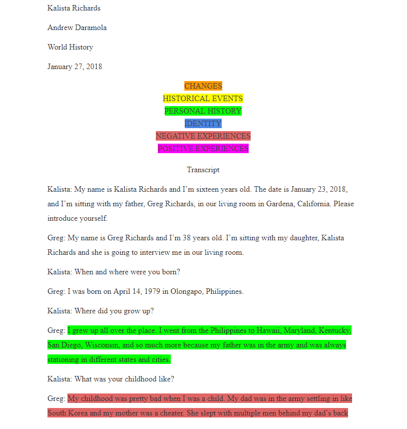
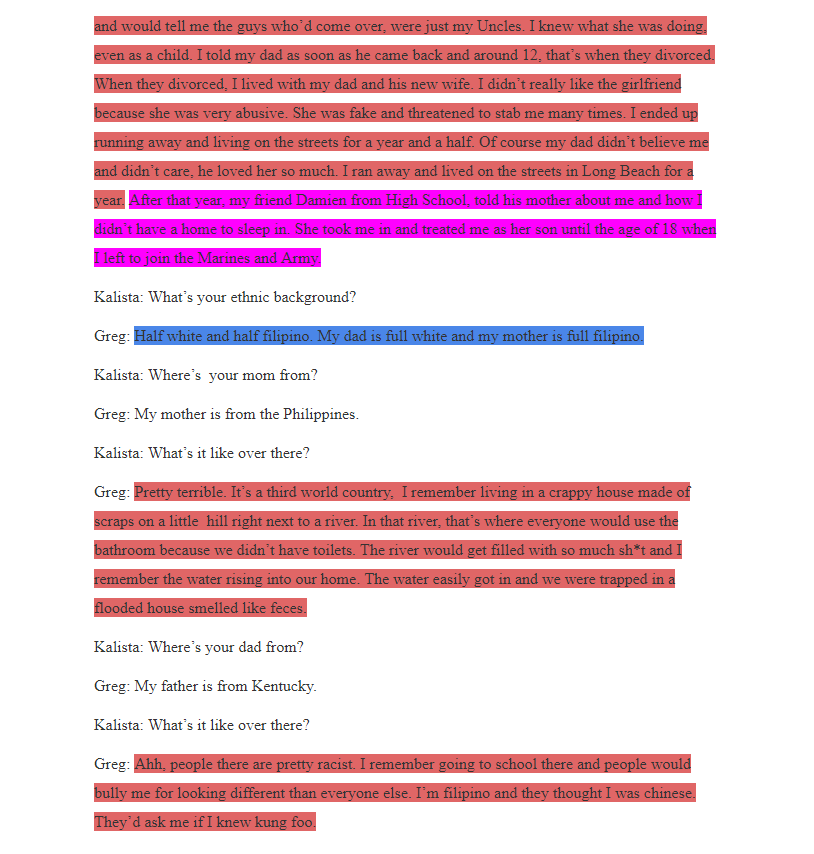
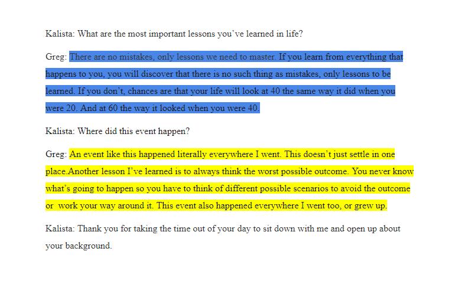
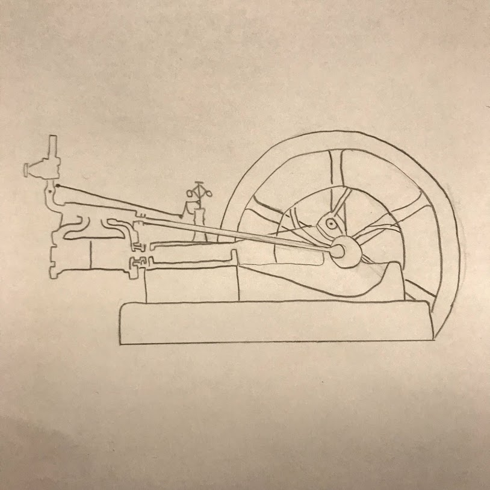

World History
Project 1 Overview:
For World History, in this project, we acted as field researchers conducting research on the personal history of a family member or community member, tracing their personal and geographic trajectory as well as interactions with historical moments. I recorded my interview and transcribed it from an audio file. Next, we annotated and (color) coded the data we found with generative codes. Then we used a map of the world to match the specific loactions noted in the interview.
Interview Audio:
My Interview Audio
Interview Transcript:



Project 2 Overview:
For our 2nd project in World History, we researched an Industrial-era technology that has influenced our world today, which was the steam engine. We conducted research to learn even more about the steam engine and then sketched a draft of the technology. We then created a replica of the steam engine to display at Exhibition. Lastly, we created a powerpoint presentation to hightlight the achievements and value of our product. We tried our very best to convince the audience that our technology/invention is the most important of the Industrial Revolution.
3D Sketch:

Presentation: